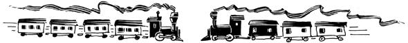

Progress might have been all right once but it has gone on too long.
Well sir, last time I said I'd tell you this time what went on the other times-namely, what the boys of the Plumtree Crossing Truth and Veracity League have been up to during those several months (and issues) I failed to report on their whatabouts. Fact is, they were getting tired of hearing themselves tell the same of tales over and over. So, at Ott Bartlett's suggestion, they decided to leave Plumtree Crossing's General Store, take a trip, and see if they might hear some new yarns. (Only Purvis Jacobs was opposed to the idea: He had a very promising field of corn laid in that looked like it would run 15 to 20 gallons to the acre.)
Now, Plumtree's finest pretty well know that life was meant to be lived leisurely, so they decided to travel by rail-on an old sleeper train they caught over at Erosion Junction.
They got on kinda late, so the first thing they did was go to bed. And since Lafe Higgins didn't realize sleeping berths had upper bunks as well as lower ones, he started off the night in the same single bed as Clarence Smithers. Lafe soon felt so cramped that he got out of the sack and tried sleeping in the aisle. Hadn't laid there long, though, before Clarence called down, "You might as well come back in; it don't feel so crowded now."
Lem Tucker slept with his feet hanging out of the train window. Doc Thromberg asked why didn't he pull them under the covers. "What," Lem said, "put those cold things in bed with me?"
August Carmichael, meanwhile, stayed up late writing a letter to his wife, Olive. August writes awful slow: "Have to," he says, "Olive can't read very fast."
Next morning, the fellas headed off to the smoking car and were surprised to find a bunch of retired old railhands already there, jawing and talking. Ott and company gathered around and-for once in their lives-listened quietly.
"Now it may be true," one watch-chained individual was saying, "that the world's gotten too fast for passenger trains, but it didn't help none that so many trains became Snail Specials. I used to travel on a Massachusetts train, and every day it stopped by a place called Wheat Sheaf Lane to take on a dozen eggs that an old woman wanted delivered to town. That ain't all: One day this Aunt Betsy only had 11 eggs. One old hen was still on the nest, though-so the conductor waited for it to complete the dozen!"
"That reminds me of the time I got in a fight with a conductor in Indiana," another rail rider broke in. "I'd told him he ought to put the cowcatcher on the back-we were going too slow to catch any cows, and back there it might at least keep them from climbing aboard. The fellow took it personal, and suggested we step off that moving train to slug it out. We did, and directly I knocked him out. Then I carried his cap down to a farm pond, filled it up, and poured the water in his face to bring him to. He stood up and we got back on the train! That weren't the end of it, though. The next day I apologized. 'That's all right,' he said. `The only thing I regret is 'we left my cap back where we fought.' I got off, went back for his cap, and caught up with the train at the next station!"
"I used to ride on the Erie Railroad," another track veteran chimed in, "an' that line were so tardy they put jokes about it in their timetables. I remember once when everybody but one fella was complaining about the slow ride. I finally got curious enough to ask how come he wasn't denouncing the company, too. `It would hardly be fair,' he replied, `because I'm traveling on a free pass. But if they don't do better pretty soon, I'm going to go buy a ticket and join you!'
"One day when I disembarked," the gent went on, "I gave the conductor a large cigar and said, 'Old man, accept this with my compliments. I've been riding this road for 12 years, and this is the first time the train ever got in exactly on time.' The conductor gave the cigar back, saying, 'I can't take nothing on false pretenses. This is yesterday's train.' "
Just then the granddaddy of this track-telling crew, an old engineer called Pop Hoghead, took center stage. "Boys," he said, "a late train beats no train. Some years ago I headed up a committee investigating a horrible wreck in the Southwest. Two trains had crashed head-on around a blind curve, killing or injuring nearly everyone on board. We found only one witness, a ranchman. He said he was horseback riding on the ridge when he saw down to the south a train coming north about 50 miles an hour. Then he looked north and saw another coming south at about the same speed, and he realized they were going to smash into one another.
'What did you do?' I asked him.
'Do? I didn't do nothin'.'
'Didn't you ride down there and try to stop 'em?'
'No.'
'Didn't you even think anything?'
'Yes, I thought a little.'
'What did you think?' "
Ott Bartlett and friends were all listening open-mouthed at this point-an' the next thing they knew, the whole crew of retired railhands chimed in together, "I thought to myself, that's a helluva way to run a railroad!"
And that's when our heroes learned that every area has its own old jokes!
EDITOR'S NOTE: Do you have a distinctive bit of regional American humor you think the Plumtree boys should hear on their travels? If so, send it to Last Laugh, Mother Earth News, P.O. Box 70, Hendersonville, NC 28793. We'll pay $10 for any joke we publish (that the fellas didn't know already!).
|
|
 |
|